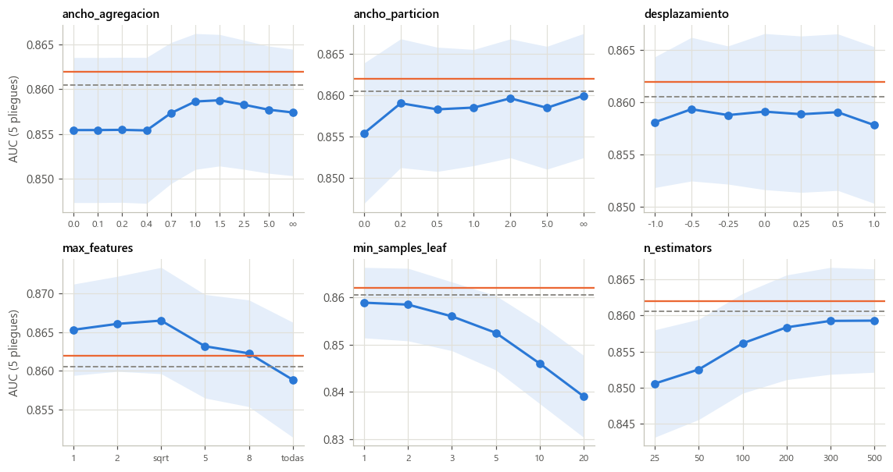
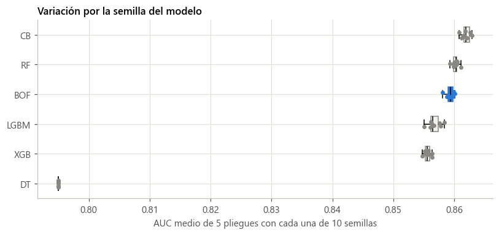
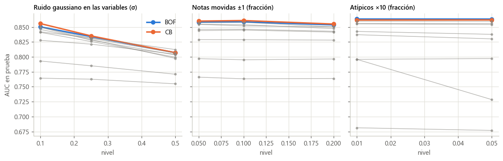
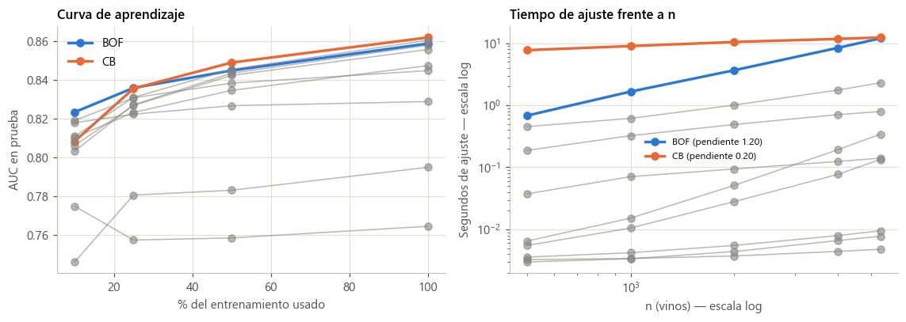
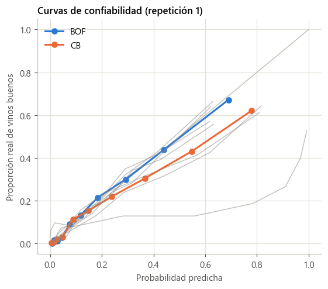
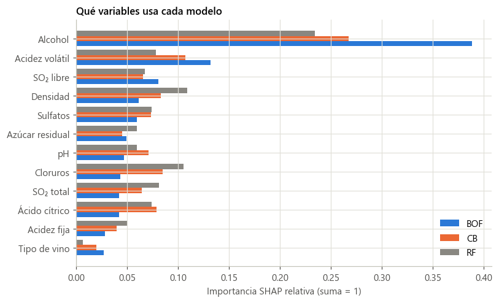

Evaluación ampliada y robustez#
Los estudios de este capítulo siguen el Cuadro 4 del enunciado. Salvo los conjuntos adicionales, todos usan los hiperparámetros finales de cada modelo y las particiones de la repetición 1; son exploratorios según el protocolo.
Conjuntos de datos adicionales#
| Modelo | Abalone | Cardiotocografía | Student Performance | Heart Disease |
|---|---|---|---|---|
| Random Forest | 0.8516 | 0.9871 | 0.8442 | 0.9122 |
| Bosque Ordinal Focalizado | 0.8543 | 0.9874 | 0.8408 | 0.9047 |
| LightGBM | 0.8561 | 0.9886 | 0.8318 | 0.9007 |
| CatBoost | 0.8582 | 0.9877 | 0.8202 | 0.9087 |
| XGBoost | 0.8557 | 0.9860 | 0.8281 | 0.9046 |
| SVM | 0.8639 | 0.9783 | 0.7947 | 0.9013 |
| Regresión Logística (L1/L2) | 0.8493 | 0.9617 | 0.8100 | 0.9136 |
| KNN | 0.8412 | 0.9671 | 0.8141 | 0.9101 |
| Decision Tree | 0.8231 | 0.9502 | 0.7738 | 0.8496 |
| Naive Bayes | 0.7751 | 0.9437 | 0.7682 | 0.8798 |
AUC medio de los 5 pliegues externos de cada modelo en cada conjunto adicional (validación anidada 5 × 3 con el mismo procedimiento y presupuesto que en vino). Las métricas no se promedian entre conjuntos.
| Conjunto | Mejor benchmark | AUC BOF | AUC mejor benchmark | ¿BOF mejor en media? | Puesto del BOF | ΔAUC (DeLong) | DeLong p | DeLong p (Holm) | ¿Significativamente peor? |
|---|---|---|---|---|---|---|---|---|---|
| Abalone | SVM | 0.8543 | 0.8639 | False | 5 | -0.0096 | 0.0002 | 0.0006 | True |
| Cardiotocografía | LightGBM | 0.9874 | 0.9886 | False | 3 | +0.0038 | 0.0606 | 0.1818 | False |
| Student Performance | Random Forest | 0.8408 | 0.8442 | False | 2 | -0.0030 | 0.7155 | 0.7155 | False |
| Heart Disease | Regresión Logística (L1/L2) | 0.9047 | 0.9136 | False | 5 | -0.0126 | 0.1529 | 0.3059 | False |
| Benchmark | Conjuntos a favor del BOF (de 5) | ΔAUC medio | Wilcoxon p | P(peor) | P(equivalente) | P(mejor) | Wilcoxon p (Holm) |
|---|---|---|---|---|---|---|---|
| Random Forest | 3 | -0.0008 | 1.0000 | 0.00 | 1.00 | 0.00 | 1.0000 |
| XGBoost | 4 | +0.0044 | 0.3125 | 0.00 | 0.98 | 0.02 | 1.0000 |
| SVM | 4 | +0.0131 | 0.3125 | 0.00 | 0.64 | 0.36 | 1.0000 |
| KNN | 4 | +0.0145 | 0.1250 | 0.00 | 0.22 | 0.78 | 0.8750 |
| Regresión Logística (L1/L2) | 4 | +0.0177 | 0.1875 | 0.00 | 0.17 | 0.83 | 1.0000 |
| Decision Tree | 5 | +0.0508 | 0.0625 | 0.00 | 0.00 | 1.00 | 0.5625 |
| Naive Bayes | 5 | +0.0642 | 0.0625 | 0.00 | 0.00 | 1.00 | 0.5625 |
| LightGBM | 3 | +0.0035 | 0.3125 | 0.00 | 1.00 | 0.00 | 1.0000 |
| CatBoost | 2 | +0.0028 | 1.0000 | 0.00 | 0.93 | 0.07 | 1.0000 |
Prueba entre conjuntos. Con los 5 conjuntos como bloques, Friedman con Iman–Davenport da F = 7.33 (p = 0.000) y el rango medio del BOF es 3.20. Con solo 5 conjuntos, Wilcoxon no puede bajar de p = 0.0625 por construcción, así que la evidencia entre conjuntos se lee mejor con la prueba bayesiana de rangos con signo [Benavoli et al., 2017] (ROPE ±0.01): frente al mejor benchmark de cada conjunto, P(mejor) = 0.00, P(equivalente) = 1.00, P(peor) = 0.00. Entre conjuntos, el BOF empata con Random Forest en el segundo rango medio (3.2), detrás de CatBoost (3.0): los modelos no rinden igual, pero la diferencia la marcan los modelos débiles y no los tres primeros. La prueba bayesiana asigna toda la probabilidad a la equivalencia práctica: frente al mejor benchmark de cada conjunto, el BOF no es mejor ni peor por más de 0.01 de AUC. El mecanismo no se generaliza como ventaja, pero tampoco como desventaja; la excepción es Abalone, donde la prueba de DeLong sí detecta que es peor que SVM.
Sensibilidad a los hiperparámetros propios#

Figura 17 AUC del BOF al mover un hiperparámetro y dejar los demás en sus valores finales (banda: ± 1 error estándar entre pliegues). La línea naranja es el mejor benchmark con sus hiperparámetros finales en los mismos pliegues: por encima de ella el BOF conserva su ventaja. Si el mejor benchmark no es Random Forest, la línea gris discontinua marca a Random Forest, la referencia que fija el protocolo.#
El BOF es poco sensible a sus tres hiperparámetros propios: al mover el ancho de agregación, el ancho de partición o el desplazamiento, el AUC se mantiene entre 0.855 y 0.860, un intervalo más estrecho que el error estándar entre pliegues. Los valores extremos son informativos: con ancho de agregación 0 (solo el umbral del evento) el AUC es 0.8555 y sube a 0.8588 con ancho 1.5, lo que indica que combinar los umbrales vecinos aporta; con ancho de partición 0 (partición binaria) baja a 0.8554. Los hiperparámetros heredados de los bosques pesan más: el AUC cae a 0.839 con 20 casos por hoja y sube de 0.851 a 0.859 al pasar de 25 a 300 árboles. El mejor valor de la rejilla (0.8665) aparece con max_features = sqrt, por encima del valor que eligió la búsqueda (todas las variables, 0.8588); la diferencia es menor que la variación entre pliegues, pero señala que la búsqueda bayesiana de 40 evaluaciones no encontró el óptimo de este hiperparámetro. Con los hiperparámetros finales y en estos 5 pliegues, el BOF (0.8588) queda por debajo de CatBoost (0.8620) y de Random Forest (0.8605): la ventaja medida en la validación anidada no se conserva en esta comparación, y solo 5 de las 42 variaciones superan a Random Forest.
Estabilidad por semilla#

Figura 18 AUC de los modelos con componentes aleatorios al cambiar su semilla (10 semillas, mismas particiones). La desviación estándar entre semillas del BOF es 0.0006.#
La semilla casi no cambia el resultado: la desviación estándar entre 10 semillas es de 0.0006 en el BOF, 0.0005 en Random Forest y 0.0007 en CatBoost, unas veinte veces menor que la desviación entre particiones (Figura 16, cerca de 0.012). La incertidumbre de la comparación proviene, por tanto, de qué vinos caen en cada pliegue y no del azar interno de los algoritmos. Los intervalos de las 10 semillas del BOF (0.858 a 0.860) y de CatBoost (0.861 a 0.863) no se solapan en estos pliegues, a favor de CatBoost.
Ruido y valores atípicos#

Figura 19 AUC al contaminar las variables (entrenamiento y prueba), las notas del entrenamiento o al agregar atípicos al entrenamiento. Azul: BOF; naranja: mejor benchmark; gris: el resto.#
El ruido en las variables es el que más daña y lo hace por igual en todos los modelos fuertes: con σ = 0.25 el BOF pierde 0.025 de AUC, CatBoost 0.027 y Random Forest 0.030, y con σ = 0.5 los tres caen cerca de 0.052 a 0.055. El ruido en la nota era el riesgo específico del BOF, porque usa la nota completa y no solo la etiqueta binaria; sin embargo, es el que menos pierde: 0.0003 con el 10 % de las notas alteradas y 0.005 con el 20 %, frente a 0.007 de CatBoost y 0.010 de Random Forest. Una explicación probable es que mover una nota un punto solo cambia uno de los seis indicadores acumulados que aprende el BOF, mientras que en un modelo binario puede invertir la etiqueta completa. Los valores atípicos en el entrenamiento no afectan a ningún modelo de árboles (cambios menores que 0.005).
Tamaño de muestra y escalabilidad#

Figura 20 Izquierda: AUC con el 10, 25, 50 y 100 % del entrenamiento (submuestras estratificadas). Derecha: tiempo de ajuste con los hiperparámetros finales al variar n (un solo proceso).#
Con pocos datos el BOF es el mejor de los tres modelos fuertes: con el 10 % del entrenamiento alcanza un AUC de 0.823, frente a 0.811 de Random Forest y 0.808 de CatBoost, y con el 25 % empata con CatBoost (0.836). Con el 50 % y el 100 % CatBoost pasa adelante (0.849 y 0.862 frente a 0.845 y 0.859). Las tres curvas siguen subiendo al llegar al 100 %, de modo que más vinos mejorarían a todos. El costo es la debilidad del BOF: ajustar los 5320 vinos tarda 11.9 s, frente a 2.3 s de Random Forest, y crece más rápido que linealmente con n (de 0.7 s con 500 vinos a 11.9 s con 5320), porque los árboles crecen hasta hojas puras sobre una implementación en numpy sin compilar. Al cuadruplicar el número de variables su tiempo se multiplica por 3, menos que el de CatBoost (por 6). La predicción tarda 0.12 ms por vino en este estudio, y el ajuste alcanza un pico de 424 MB de memoria, el mayor de los 10 modelos.
Cambio de distribución#
| Modelo | Entrena con tintos → evalúa blancos | Entrena con blancos → evalúa tintos | Referencia (pliegues aleatorios) |
|---|---|---|---|
| CatBoost | 0.7464 | 0.7453 | 0.8620 |
| Random Forest | 0.7504 | 0.7513 | 0.8605 |
| Bosque Ordinal Focalizado | 0.7812 | 0.8096 | 0.8588 |
| LightGBM | 0.7401 | 0.7353 | 0.8580 |
| XGBoost | 0.7465 | 0.7461 | 0.8558 |
| KNN | 0.7444 | 0.7283 | 0.8474 |
| SVM | 0.7355 | 0.6387 | 0.8449 |
| Regresión Logística (L1/L2) | 0.7836 | 0.8426 | 0.8289 |
| Decision Tree | 0.6967 | 0.7802 | 0.7950 |
| Naive Bayes | 0.7598 | 0.6692 | 0.7645 |
Es el resultado más favorable al BOF. Entrenado solo con tintos y evaluado en blancos obtiene un AUC de 0.781, y en la dirección contraria 0.810, frente a 0.746 y 0.745 de CatBoost y 0.750 y 0.751 de Random Forest. Solo la regresión logística lo supera (0.784 y 0.843), como cabe esperar de un modelo lineal cuando cambia la población. Los modelos fuertes pierden entre 0.05 y 0.12 respecto a su AUC dentro de la misma población, lo que confirma que tintos y blancos no son intercambiables y que el modelo no debe aplicarse a otro tipo de vino sin reentrenarlo. Una explicación probable de la ventaja del BOF es que aprender toda la escala de la nota impone una estructura más regular que la frontera binaria, y esa estructura se transfiere mejor.
Calibración y reglas de puntuación#

Figura 21 Curvas de confiabilidad con 10 grupos por cuantiles de la probabilidad predicha.#
| Modelo | ECE | Brier | Log-loss | Probabilidad media | Prevalencia real |
|---|---|---|---|---|---|
| KNN | 0.0124 | 0.1140 | 0.3766 | 0.198 | 0.190 |
| Random Forest | 0.0131 | 0.1090 | 0.3419 | 0.186 | 0.190 |
| Bosque Ordinal Focalizado | 0.0134 | 0.1081 | 0.3392 | 0.190 | 0.190 |
| Regresión Logística (L1/L2) | 0.0175 | 0.1190 | 0.3730 | 0.190 | 0.190 |
| Decision Tree | 0.0245 | 0.1234 | 0.4591 | 0.192 | 0.190 |
| CatBoost | 0.0424 | 0.1178 | 0.3631 | 0.226 | 0.190 |
| LightGBM | 0.0505 | 0.1223 | 0.3783 | 0.220 | 0.190 |
| XGBoost | 0.0666 | 0.1192 | 0.3670 | 0.256 | 0.190 |
| Naive Bayes | 0.3042 | 0.2848 | 1.0246 | 0.461 | 0.190 |
El BOF y Random Forest son los modelos mejor calibrados entre los fuertes: su ECE es de 0.013 y su probabilidad media (0.190 y 0.186) coincide con la prevalencia real (0.190). KNN tiene un ECE similar (0.012), con peor Brier. Los métodos de boosting sobrestiman: CatBoost predice en promedio 0.226 (ECE de 0.042) y XGBoost 0.256 (ECE de 0.067), consecuencia de la ponderación de clases y del sobremuestreo con que se entrenaron. El BOF tiene además el menor puntaje de Brier (0.108) y la menor log-pérdida (0.339). La calibración del BOF proviene del ajuste de Platt con los casos fuera de bolsa: la ablación muestra que sin ese paso el AUC no cambia, pero el Brier sube de 0.108 a 0.139.
Cuantificación de la incertidumbre: conjuntos conformes#
| Modelo | Cobertura 95 % marginal | Cobertura 90 % marginal | Tamaño medio 95 % marginal | Tamaño medio 90 % marginal |
|---|---|---|---|---|
| Bosque Ordinal Focalizado | 0.954 | 0.902 | 1.316 | 1.146 |
| CatBoost | 0.951 | 0.902 | 1.367 | 1.216 |
| Decision Tree | 0.960 | 0.933 | 1.420 | 1.306 |
| KNN | 0.954 | 0.902 | 1.337 | 1.149 |
| LightGBM | 0.954 | 0.906 | 1.371 | 1.216 |
| Naive Bayes | 0.952 | 0.902 | 1.689 | 1.549 |
| Random Forest | 0.955 | 0.902 | 1.317 | 1.144 |
| Regresión Logística (L1/L2) | 0.952 | 0.903 | 1.334 | 1.171 |
| SVM | 0.950 | 0.899 | 1.562 | 1.382 |
| XGBoost | 0.950 | 0.898 | 1.357 | 1.191 |
Los conjuntos conformes por partición [Angelopoulos and Bates, 2023] usan el 75 % del entrenamiento externo para ajustar y el 25 % para calibrar el umbral de no conformidad; la cobertura se mide en la prueba externa. Con nivel nominal del 90 % y del 95 %, la cobertura empírica debe quedar cerca de esos valores; el tamaño medio dice cuántas veces el conjunto contiene las dos clases (el modelo no decide). La cobertura marginal se cumple en todos los modelos: con nivel nominal del 90 % el BOF cubre el 90.2 % de los vinos y con el 95 %, el 95.4 %, con conjuntos de 1.15 y 1.32 clases en promedio. Pero la cobertura marginal oculta un desequilibrio: con el 90 % nominal, los conjuntos del BOF contienen la clase correcta en el 98.1 % de los vinos no buenos y solo en el 56.4 % de los buenos (52.7 % en Random Forest y 80.5 % en CatBoost). La garantía se cumple en promedio a costa de la clase minoritaria, que es la que interesa. La variante por clase (Mondrian) lo corrige: la cobertura queda en 90.1 % y 91.5 % para cada clase, a cambio de conjuntos más grandes (1.31 clases en promedio), es decir, de que el modelo se abstenga de decidir con más frecuencia. El dashboard muestra la variante marginal junto con su cobertura empírica.
Análisis de errores#
| Subgrupo | n | Prevalencia | Bosque Ordinal Focalizado | CatBoost | LightGBM | Random Forest | XGBoost |
|---|---|---|---|---|---|---|---|
| alcohol alto | 1681 | 0.402 | 0.7499 | 0.7191 | 0.7035 | 0.7457 | 0.7343 |
| alcohol bajo | 1863 | 0.040 | 0.8740 | 0.8711 | 0.8266 | 0.8638 | 0.8592 |
| alcohol medio | 1776 | 0.146 | 0.8029 | 0.7695 | 0.7714 | 0.7937 | 0.7940 |
| blanco | 3961 | 0.208 | 0.8549 | 0.8376 | 0.8294 | 0.8502 | 0.8451 |
| frontera (nota 6 o 7) | 3179 | 0.269 | 0.7788 | 0.7586 | 0.7565 | 0.7803 | 0.7745 |
| tinto | 1359 | 0.135 | 0.8838 | 0.8764 | 0.8611 | 0.8844 | 0.8855 |
| todos | 5320 | 0.190 | 0.8637 | 0.8488 | 0.8400 | 0.8606 | 0.8569 |
La segunda tabla usa la regla de decisión de una bodega que solo cata el 20 % de vinos con mayor puntaje: un modelo acierta con un vino bueno si lo deja en ese 20 % y con uno no bueno si lo deja fuera. En 155 vinos acierta solo el BOF y en 134 solo Random Forest (prueba exacta de McNemar, p = 0.2394). La diferencia no es significativa: con esa regla de decisión los dos bosques se equivocan en vinos distintos, pero en cantidades parecidas. El BOF falla donde fallan todos: su AUC baja a 0.750 en los vinos de alcohol alto y a 0.779 en la frontera de las notas 6 y 7, que reúne al 60 % de los vinos. En esa frontera no supera a Random Forest (0.780), y entre los tintos empatan (0.884); su ventaja se concentra en los blancos (0.855 frente a 0.850) y en los vinos de alcohol bajo y medio. La probabilidad media por nota muestra el mecanismo: el BOF asigna más probabilidad que Random Forest a los vinos de 7, 8 y 9 (0.42, 0.51 y 0.60 frente a 0.40, 0.45 y 0.53) y menos a los de 3 y 4, pero también algo más a los de 6 (0.195 frente a 0.190). Usar la nota completa ordena mejor los extremos de la escala y no resuelve la confusión entre 6 y 7, que es donde se decide el evento. La causa probable es que esas dos notas apenas difieren en su química y que la nota, mediana de pocos catadores, tiene un ruido comparable a esa diferencia.
Interpretabilidad: SHAP del modelo original frente al mejor benchmark#

Figura 22 Importancia SHAP global (media del valor absoluto del aporte, normalizada) del BOF, del mejor benchmark y de Random Forest, calculada sobre los mismos 300 vinos. El BOF se explica con un TreeExplainer exacto sobre sus propios árboles (src/explicaciones.py::arboles_bof).#
La correlación de Spearman entre la importancia de las variables del BOF y la del mejor benchmark (CatBoost) es 0.68. Los tres modelos coinciden en la variable principal, el alcohol, y la acidez volátil es la segunda en el BOF y en CatBoost, pero el BOF concentra más su explicación: el alcohol reúne el 39 % de su importancia, frente al 27 % en CatBoost y el 23 % en Random Forest, que reparten más peso entre la densidad, los cloruros y el SO₂ total. Como la densidad depende sobre todo del alcohol y del azúcar, los modelos distribuyen de forma distinta una misma información entre variables correlacionadas; la importancia SHAP describe cómo decide cada modelo, no un efecto causal de cada variable sobre la nota.